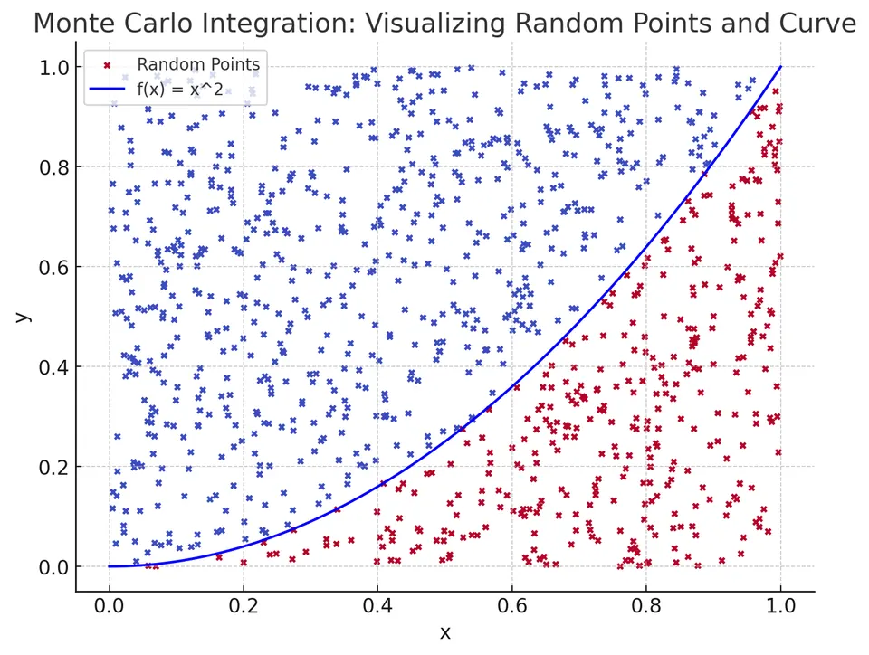

Monte Carlo Integration
Monte Carlo integration approximates an integral by averaging function values at randomly selected points and applying the appropriate volume or probability weights. The sampling distribution is part of the method: uniform samples use the domain volume, while nonuniform samples require weights that account for their density. Unlike a deterministic trapezoidal or Simpson grid, a run produces a random estimate. Its uncertainty is assessed statistically across possible samples, rather than by assuming that each additional sample must improve that particular run.
The key strength of Monte Carlo integration lies in its applicability to high-dimensional problems, where conventional deterministic methods suffer from the “curse of dimensionality” and become prohibitively complex or computationally expensive. In such high-dimensional spaces, Monte Carlo methods often provide a practical solution by producing an estimate whose accuracy improves as more random samples are drawn.
Conceptual Illustration:
Consider integrating a function $f(x)$ over an interval or a multidimensional region. You can think of Monte Carlo integration as throwing random “dart points” into the domain and using the average value of the function at these randomly chosen points to approximate the integral. The more darts you throw, the closer you get to the true area (integral), provided the sampling is unbiased:

As you increase the number of random points (samples), your approximation generally improves.
Mathematical formulation
Suppose we want to approximate the integral:
$$ I = \int_D f(x)\, dx $$
where $D$ is the domain of integration and $x$ can be scalar or vector-valued (i.e., the integral can be 1D, 2D, or higher-dimensional).
Key Idea:
I. Let $V = \text{Volume}(D)$ be the volume (or length, area, hypervolume) of the domain $D$.
II. Draw $N$ independent random points $x_1, x_2, \ldots, x_N$ uniformly distributed within $D$.
III. Evaluate the function $f$ at these points and compute the average value:
$$ \overline{f} = \frac{1}{N}\sum_{i=1}^N f(x_i) $$
IV. Estimate the integral as:
$$ I \approx V \overline{f} $$
As $N \to \infty$, the Law of Large Numbers ensures that $\overline{f}$ converges to the true mean of $f$ over the domain, and thus the estimator $\widehat I_N=V\overline f$ converges to the true integral $I$, provided $f$ is integrable and $0<V<\infty$.
Derivation and statistical basis
Monte Carlo integration’s foundation lies in probability theory. If $X$ is a random variable uniformly distributed over $D$, then:
$$ \mathbb{E}[f(X)] = \frac{1}{V}\int_D f(x)\, dx $$
Hence:
$$ \int_D f(x)\, dx = V \mathbb{E}[f(X)] $$
By sampling $X_1, X_2, \ldots, X_N$ independently and identically distributed (i.i.d.) as $X$, we can approximate $\mathbb{E}[f(X)]$ by the sample mean:
$$ \mathbb{E}[f(X)] \approx \frac{1}{N}\sum_{i=1}^N f(X_i) $$
Thus:
$$ \int_D f(x)\, dx \approx V \frac{1}{N}\sum_{i=1}^N f(X_i) $$
The standard error of the estimate is $V\sigma/\sqrt{N}$, where $\sigma^2$ is the variance of $f(X)$; the error therefore decreases proportionally to $1/\sqrt{N}$.
Unbiasedness, variance, and confidence intervals
For independent uniform samples, linearity of expectation gives $\mathbb E[\widehat I_N]=I$. If $\sigma^2=\operatorname{Var}(f(X))<\infty$, independence also gives
$$ \operatorname{Var}(\widehat I_N)=\frac{V^2}{N^2}\sum_{i=1}^N\operatorname{Var}(f(X_i))=\frac{V^2\sigma^2}{N}. $$
Thus $V\sigma/\sqrt N$ is the root mean square error of this unbiased estimator. It describes variation across runs, not a deterministic error bound for one run. Four times as many samples halve this standard error; one hundred times as many reduce it by a factor of ten. A larger sample can still give a less accurate individual estimate by chance.
Estimate the unknown variance using $s^2=\sum_i(f(X_i)-\overline f)^2/(N-1)$ for $N>1$. When a central limit approximation is appropriate, an approximate 95% confidence interval is
$$ \widehat I_N\ \pm\ 1.96\frac{Vs}{\sqrt N}. $$
For $f(x)=x^2$ on $[0,1]$, $\sigma^2=\mathbb E[X^4]-(\mathbb E[X^2])^2=1/5-1/9=4/45$. At $N=1000$, the theoretical standard error is about $0.00943$, making the illustrative estimate $0.3365$ quite plausible. Heavy tails or rare, concentrated contributions can make a normal approximation unreliable at modest sample sizes.
For importance sampling with density $p(x)>0$ wherever the integrand is nonzero, the unbiased estimator becomes
$$ \widehat I_N=\frac1N\sum_{i=1}^N\frac{f(X_i)}{p(X_i)},\qquad X_i\sim p. $$
The weighting is essential. A useful density reduces variance; a poorly chosen one can increase it or make it infinite. The $N^{-1/2}$ exponent does not explicitly depend on dimension, but the variance and the cost of obtaining each sample still can.
Algorithm steps
Step 1: Identify the domain and volume.
- Determine the region $D$ over which you need to integrate.
- Compute or know the volume $V$ of $D$. For example, if $D=[a,b]$ in one dimension, then $V=b-a$. In higher dimensions, compute the product of side lengths for a hyper-rectangle, or use known formulas or methods for more complex domains.
Step 2: Generate random points.
- Generate $N$ random points $x_i$ uniformly distributed in $D$.
- In one dimension, sample $x_i \in [a,b]$ uniformly.
- For a rectangular domain, sample coordinates independently and uniformly from their respective ranges. For a general domain, use a sampler that is uniform on that domain, or use an enclosing box with rejection or an indicator function; independent coordinate ranges alone do not describe an arbitrary shape.
Step 3: Evaluate the function.
Compute $f(x_i)$ for each random point $x_i$.
Step 4: Compute the average.
Calculate $\overline{f} = \frac{1}{N}\sum_{i=1}^N f(x_i)$.
Step 5: Estimate the integral.
Multiply by the volume $V$:
$$ I \approx V \overline{f}. $$
Step 6: Assess accuracy.
- If necessary, increase $N$ and repeat to improve accuracy.
- The standard deviation of the estimator decreases as $1/\sqrt{N}$.
Example
1D Example: Estimate $\int_0^1 x^2 dx$.
Exact answer: $\int_0^1 x^2 dx = \frac{1}{3} \approx 0.3333.$
Monte Carlo Steps:
I. Domain $D=[0,1]$, volume $V=1$.
II. Let $N=1000$. Generate 1000 random points $x_i$ in $[0,1]$.
Step 3. Compute $f(x_i)= (x_i)^2$ for each $i$.
IV. Suppose after computation, $\frac{1}{1000}\sum_{i=1}^{1000} (x_i)^2 =0.3365.$ (This is just an example value.)
V. Since $V=1$, the integral estimate is $I \approx 0.3365.$
VI. With more points (e.g., $N=10^5$), we would expect the estimate to get closer to 0.3333.
Advantages
I. Dimensional Independence:
Monte Carlo methods handle high-dimensional integrals more easily than deterministic methods, whose complexity often grows exponentially with dimension.
II. Simplicity:
Easy to implement, no complex quadrature rules needed. Just random sampling and arithmetic.
III. Versatility:
Works with any integrable function and domain, including complex shapes, as long as uniform sampling is possible.
Limitations
I. Convergence Rate:
Monte Carlo integration converges as $1/\sqrt{N}$, which can be slower than some deterministic methods in low dimensions.
II. Variance and Accuracy:
To achieve high accuracy, a large $N$ may be required, increasing computational cost.
III. Randomness:
The result is a random variable. Different random draws give slightly different answers. The reference implementation uses a fixed default seed (seed=0), so repeated runs are reproducible; pass a different seed, or seed=None, to get independent estimates. Confidence intervals and variance reduction techniques (e.g., importance sampling, stratified sampling) are often employed.
Variants and enhancements
- Importance Sampling: Can reduce the variance constant by sampling more frequently in regions that contribute substantially, with the reciprocal-density weights shown above. The ordinary finite-variance sampling rate remains $O(N^{-1/2})$.
- Stratified and Latin Hypercube Sampling: Distribute random samples across the domain more evenly to reduce variance for suitable integrands.
- Quasi-Monte Carlo Sampling: Uses low-discrepancy point sets; deterministic versions are not independent random sampling, so ordinary i.i.d. confidence intervals do not apply directly.
- Adaptive Methods: Adjust the sampling distribution on the fly to improve efficiency.